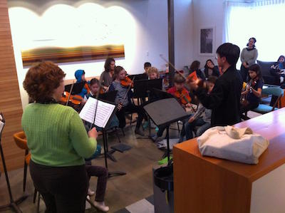

Teacher Training
 Advanced players of the Villa Sinfonia as well as other qualified instrumentalists are able to receive guidance on the art of teaching young children and repertoire lists, and conducting string orchestra and group classes. Villa Sinfonia members are also trained to tutor younger students.
Interested in a career in teaching? Have an express interest in shaping young musical minds? The Villa Sinfonia Foundation has taken to providing appropriate training to advanced players of the Villa Sinfonia as well as other qualified instrumentalists. Ranging everywhere from private tuition to group classes, to conducting a string orchestra, the opportunities are nearly endless in providing the experience needed to mold young students.